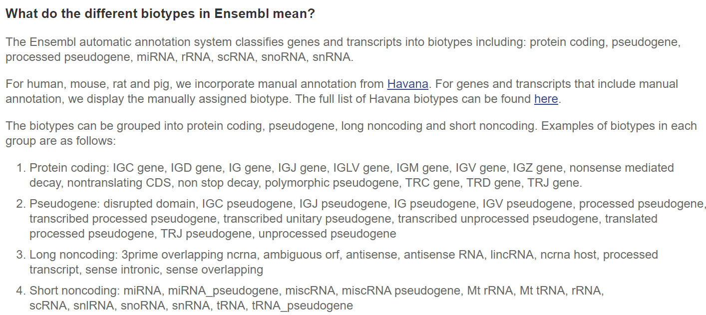
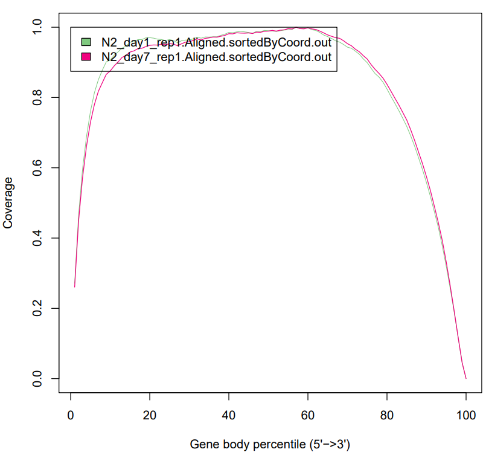

Analysis of RNA-seq data: read QC and alignment
Download reference genome
To download the reference for this lab, we use ENSEMBL database.
In ENSEMBL database, each species may have different releases of genome build. We use release-111 in this project.
The genome sequences can be obtained from the link below: https://ftp.ensembl.org/pub/release-111/fasta/caenorhabditis_elegans/dna/
The genoe anntation file in gtf format can be obtained here: https://ftp.ensembl.org/pub/release-111/gtf/caenorhabditis_elegans/
%%bash
wget -O Caenorhabditis_elegans.WBcel235.dna.toplevel.fa.gz https://ftp.ensembl.org/pub/release-111/fasta/caenorhabditis_elegans/dna/Caenorhabditis_elegans.WBcel235.dna.toplevel.fa.gz
gunzip Caenorhabditis_elegans.WBcel235.dna.toplevel.fa.gz
%%bash
## A *fai file will be generated
samtools faidx ref/Caenorhabditis_elegans.WBcel235.dna.toplevel.fa
%%bash
wget -O Caenorhabditis_elegans.WBcel235.111.gtf.gz -nv https://ftp.ensembl.org/pub/release-111/gtf/caenorhabditis_elegans/Caenorhabditis_elegans.WBcel235.111.gtf.gz
gunzip Caenorhabditis_elegans.WBcel235.111.gtf.gz
In this course, the reference files have been downloaded and stored in shared folder for BIOI611: /scratch/zt1/project/bioi611/shared/reference/
As you already leart, you can create a symbolic link for you to use in your scratch folder:
%%bash
cd /scratch/zt1/project/bioi611/user/$USER
ln -s /scratch/zt1/project/bioi611/shared/reference/ .
How many chromsomes there are
%%bash
cd /scratch/zt1/project/bioi611/user/$USER
grep '>' reference/Caenorhabditis_elegans.WBcel235.dna.toplevel.fa
>I dna:chromosome chromosome:WBcel235:I:1:15072434:1 REF
>II dna:chromosome chromosome:WBcel235:II:1:15279421:1 REF
>III dna:chromosome chromosome:WBcel235:III:1:13783801:1 REF
>IV dna:chromosome chromosome:WBcel235:IV:1:17493829:1 REF
>V dna:chromosome chromosome:WBcel235:V:1:20924180:1 REF
>X dna:chromosome chromosome:WBcel235:X:1:17718942:1 REF
>MtDNA dna:chromosome chromosome:WBcel235:MtDNA:1:13794:1 REF
How many genes there are
%%bash
cd /scratch/zt1/project/bioi611/user/$USER
grep -v '#' reference/Caenorhabditis_elegans.WBcel235.111.gtf \
|awk '$3=="gene"' \
|sed 's/.*gene_biotype "//' \
|sed 's/";//'|sort |uniq -c \
| sort -k1,1n
22 rRNA
100 antisense_RNA
129 snRNA
194 lincRNA
261 miRNA
346 snoRNA
634 tRNA
2128 pseudogene
7764 ncRNA
15363 piRNA
19985 protein_coding
 Source: https://useast.ensembl.org/Help/Faq?id=468eudogene
Download raw fastq files
When scientists publish their results based on NGS data, they are required to deposit the raw data in public database, e.g. NCBI GEO/SRA database. In the manuscript, the accession number is included for the community to search and download the data. Majority of the times, the information will be included in a section called 'Data Availability'.
Depending on whether GEO or SRA numbers are provided. You can go to either GEO or SRA database:
https://www.ncbi.nlm.nih.gov/sra
https://www.ncbi.nlm.nih.gov/geo/
An alternative way is that you can use third party tool which will help you quick generate the command lines that you can use to download the data. One example is SRA explorer:
https://sra-explorer.info/
%%bash
mkdir -p raw_data/
curl -L ftp://ftp.sra.ebi.ac.uk/vol1/fastq/SRR156/002/SRR15694102/SRR15694102.fastq.gz -o raw_data/N2_day7_rep1.fastq.gz
curl -L ftp://ftp.sra.ebi.ac.uk/vol1/fastq/SRR156/001/SRR15694101/SRR15694101.fastq.gz -o raw_data/N2_day7_rep2.fastq.gz
curl -L ftp://ftp.sra.ebi.ac.uk/vol1/fastq/SRR156/000/SRR15694100/SRR15694100.fastq.gz -o raw_data/N2_day7_rep3.fastq.gz
curl -L ftp://ftp.sra.ebi.ac.uk/vol1/fastq/SRR156/099/SRR15694099/SRR15694099.fastq.gz -o raw_data/N2_day1_rep1.fastq.gz
curl -L ftp://ftp.sra.ebi.ac.uk/vol1/fastq/SRR156/098/SRR15694098/SRR15694098.fastq.gz -o raw_data/N2_day1_rep2.fastq.gz
curl -L ftp://ftp.sra.ebi.ac.uk/vol1/fastq/SRR156/097/SRR15694097/SRR15694097.fastq.gz -o raw_data/N2_day1_rep3.fastq.gz
Quality control
Use FastQC to check the quality of fastq files:
%%bash
cd /scratch/zt1/project/bioi611/user/$USER
sbatch ../../shared/scripts/bulkRNA_SE_s1_fastqc.sub
Use trim galore to remove adaptors, low quality bases and low quality reads.
%%bash
cd /scratch/zt1/project/bioi611/user/$USER
sbatch ../../shared/scripts/bulkRNA_SE_s2_trim_galore.sub
The command lines to run trim_galore were listed below. In the jobs between, trim_galore is executed in container built by singularity.
The input and output folders are all under /scratch/zt1/project/bioi611/. When you run trim_galore inside the container, you need to make sure trim_galore has access to the input and output files. In the job below, the STAR index files are located in the shared folder (two levels up). So you need to bind the folder that includes both $PWD and the STAR index folder. That's the reason we specify SIF_BIND="/scratch/zt1/project/bioi611/".
%%bash
cd /scratch/zt1/project/bioi611/user/$USER
cat ../../shared/scripts/bulkRNA_SE_s2_trim_galore.sub
#!/bin/bash
#SBATCH --partition=standard
#SBATCH -t 40:00:00
#SBATCH --nodes=1
#SBATCH --ntasks=6
#SBATCH --cpus-per-task=12
#SBATCH --job-name=bulkRNA_SE_s2_trim_galore
#SBATCH --mail-type=FAIL,BEGIN,END
#SBATCH --error=%x-%J-%u.err
#SBATCH --output=%x-%J-%u.out
module load singularity
## Binding path and singularity image file
SIF_BIND="/scratch/zt1/project/bioi611/"
SIF_TRIMGALORE="/scratch/zt1/project/bioi611/shared/software/trimgalore_v0.6.10.sif"
## Paths to working directory and input fastq files
WORKDIR="/scratch/zt1/project/bioi611/user/$USER"
FASTQ_DIR="/scratch/zt1/project/bioi611/shared/raw_data/bulk_RNAseq_SE/"
cd $WORKDIR
date
singularity exec -B $SIF_BIND $SIF_TRIMGALORE trim_galore --fastqc --cores 4 --output_dir bulk_RNAseq_SE_trim_galore $FASTQ_DIR/N2_day1_rep1.fastq.gz &
singularity exec -B $SIF_BIND $SIF_TRIMGALORE trim_galore --fastqc --cores 4 --output_dir bulk_RNAseq_SE_trim_galore $FASTQ_DIR/N2_day1_rep2.fastq.gz &
singularity exec -B $SIF_BIND $SIF_TRIMGALORE trim_galore --fastqc --cores 4 --output_dir bulk_RNAseq_SE_trim_galore $FASTQ_DIR/N2_day1_rep3.fastq.gz &
singularity exec -B $SIF_BIND $SIF_TRIMGALORE trim_galore --fastqc --cores 4 --output_dir bulk_RNAseq_SE_trim_galore $FASTQ_DIR/N2_day7_rep1.fastq.gz &
singularity exec -B $SIF_BIND $SIF_TRIMGALORE trim_galore --fastqc --cores 4 --output_dir bulk_RNAseq_SE_trim_galore $FASTQ_DIR/N2_day7_rep2.fastq.gz &
singularity exec -B $SIF_BIND $SIF_TRIMGALORE trim_galore --fastqc --cores 4 --output_dir bulk_RNAseq_SE_trim_galore $FASTQ_DIR/N2_day7_rep3.fastq.gz &
wait
date
Read alignment using STAR
Generate genome index
During this step, the reference genome (FASTA file) and annotations (GTF files) are supplied. The genome index are saved to disk and only need to be generated once.
%%bash
cd /scratch/zt1/project/bioi611/user/$USER
sbatch ../../shared/scripts/bulkRNA_s1_star_idx.sub
Here is the content in `bulkRNA_s1_star_idx.sub`:
%%bash
cd /scratch/zt1/project/bioi611/user/$USER
cat ../../shared/scripts/bulkRNA_s1_star_idx.sub
#!/bin/bash
#SBATCH --partition=standard
#SBATCH -t 40:00:00
#SBATCH --nodes=1
#SBATCH --ntasks=1
#SBATCH --cpus-per-task=2
#SBATCH --job-name=bulkRNA_s1_star_idx
#SBATCH --mail-type=FAIL,BEGIN,END
#SBATCH --error=%x-%J-%u.err
#SBATCH --output=%x-%J-%u.out
PATH="/scratch/zt1/project/bioi611/shared/software/STAR_2.7.11b/Linux_x86_64_static/:$PATH"
WORKDIR="/scratch/zt1/project/bioi611/user/$USER"
FASTA="/scratch/zt1/project/bioi611/shared/reference/Caenorhabditis_elegans.WBcel235.dna.toplevel.fa"
GTF="/scratch/zt1/project/bioi611/shared/reference/Caenorhabditis_elegans.WBcel235.111.gtf"
cd $WORKDIR
mkdir STAR_index
STAR --runThreadN 2 --runMode genomeGenerate \
--genomeDir STAR_index \
--genomeFastaFiles $FASTA \
--sjdbGTFfile $GTF
The genome files will be outputted into STAR_index/:
%%bash
cd /scratch/zt1/project/bioi611/user/$USER
ls STAR_index/
chrLength.txt
chrNameLength.txt
chrName.txt
chrStart.txt
exonGeTrInfo.tab
exonInfo.tab
geneInfo.tab
Genome
genomeParameters.txt
SA
SAindex
sjdbInfo.txt
sjdbList.fromGTF.out.tab
sjdbList.out.tab
transcriptInfo.tab
Important things to keep in mind:
-
STARis a splicing aware mapper which is required for RNA-seq read alignment -
Genome index only need to be built one
-
Make sure the reference file and annotation file match each other.
For a particular species, there might be reference genomes built for different strains/ecotypes. Even for the same strain/ecotype, there could be different versions.
Human Genome Assemblies, hg19 and hg38 are two different versions of the human genome, which is the complete set of DNA in an individual's cells. Hg19 is the older of the two assemblies and was released in 2002. Hg38, also known as GRCh38, is the more recent assembly and was released in 2013. It is a more accurate and detailed version of the human genome and includes additional data that was not available when HG19 was released.
After ethe reference genome is built, you can start to align the RNA-seq reads using the command lines below.
%%bash
cd /scratch/zt1/project/bioi611/user/$USER
sbatch ../../shared/scripts/bulkRNA_SE_s3_STAR_align.sub
sbatch ../../shared/scripts/bulkRNA_SE_s4_bam_index.sub
%%bash
cd /scratch/zt1/project/bioi611/user/$USER
cat ../../shared/scripts/bulkRNA_SE_s3_STAR_align.sub
#!/bin/bash
#SBATCH --partition=standard
#SBATCH -t 40:00:00
#SBATCH --nodes=1
#SBATCH --ntasks=6
#SBATCH --cpus-per-task=10
#SBATCH --job-name=bulkRNA_SE_STAR_align
#SBATCH --mail-type=FAIL,BEGIN,END
#SBATCH --error=%x-%J-%u.err
#SBATCH --output=%x-%J-%u.out
PATH="/scratch/zt1/project/bioi611/shared/software/STAR_2.7.11b/Linux_x86_64_static/:$PATH"
INDIR=bulk_RNAseq_SE_trim_galore/
OUTDIR=bulkRNA_SE_STAR_align/
mkdir -p $OUTDIR
STAR --genomeDir STAR_index \
--outSAMtype BAM SortedByCoordinate \
--twopassMode Basic \
--quantMode TranscriptomeSAM GeneCounts \
--readFilesCommand zcat \
--outFileNamePrefix $OUTDIR/N2_day1_rep1. \
--runThreadN 10 \
--readFilesIn $INDIR/N2_day1_rep1_trimmed.fq.gz > $OUTDIR/N2_day1_rep1.log.txt 2>&1 &
STAR --genomeDir STAR_index \
--outSAMtype BAM SortedByCoordinate \
--twopassMode Basic \
--quantMode TranscriptomeSAM GeneCounts \
--readFilesCommand zcat \
--outFileNamePrefix $OUTDIR/N2_day1_rep2. \
--runThreadN 10 \
--readFilesIn $INDIR/N2_day1_rep2_trimmed.fq.gz > $OUTDIR/N2_day1_rep2.log.txt 2>&1 &
STAR --genomeDir STAR_index \
--outSAMtype BAM SortedByCoordinate \
--twopassMode Basic \
--quantMode TranscriptomeSAM GeneCounts \
--readFilesCommand zcat \
--outFileNamePrefix $OUTDIR/N2_day1_rep3. \
--runThreadN 10 \
--readFilesIn $INDIR/N2_day1_rep3_trimmed.fq.gz > $OUTDIR/N2_day1_rep3.log.txt 2>&1 &
STAR --genomeDir STAR_index \
--outSAMtype BAM SortedByCoordinate \
--twopassMode Basic \
--quantMode TranscriptomeSAM GeneCounts \
--readFilesCommand zcat \
--outFileNamePrefix $OUTDIR/N2_day7_rep1. \
--runThreadN 10 \
--readFilesIn $INDIR/N2_day7_rep1_trimmed.fq.gz > $OUTDIR/N2_day7_rep1.log.txt 2>&1 &
STAR --genomeDir STAR_index \
--outSAMtype BAM SortedByCoordinate \
--twopassMode Basic \
--quantMode TranscriptomeSAM GeneCounts \
--readFilesCommand zcat \
--outFileNamePrefix $OUTDIR/N2_day7_rep2. \
--runThreadN 10 \
--readFilesIn $INDIR/N2_day7_rep2_trimmed.fq.gz > $OUTDIR/N2_day7_rep2.log.txt 2>&1 &
STAR --genomeDir STAR_index \
--outSAMtype BAM SortedByCoordinate \
--twopassMode Basic \
--quantMode TranscriptomeSAM GeneCounts \
--readFilesCommand zcat \
--outFileNamePrefix $OUTDIR/N2_day7_rep3. \
--runThreadN 10 \
--readFilesIn $INDIR/N2_day7_rep3_trimmed.fq.gz > $OUTDIR/N2_day7_rep3.log.txt 2>&1 &
wait
In the STAR command lines, the following parameters are used
--genomeDir STAR_index
--genomeDir is required. The name of the parameter is self-explanatory.
--outSAMtype BAM SortedByCoordinate
This parameter is optional. If not specified, 'SAM' will be used:
SAM: output SAM without sorting
BAM format is the binary format for SAM file. To understand the details of BAM/SAM format, refer to the link here.
--twopassMode Basic
Wil the parameter above, STAR will perform the 1st pass mapping,
then it will automatically extract junctions, insert them into the genome index, and, finally, re-map
all reads in the 2nd mapping pass. This option can be used with annotations, which can be included
either at the run-time, or at the genome generation step
--quantMode TranscriptomeSAM GeneCounts
With parameters above, STAR produces both the Aligned.toTranscriptome.out.bam and ReadsPerGene.out.tab outputs
--readFilesCommand zcat
The parameter specifies the command line (None, zcat or bzcat) to execute for each of the input file
-
--outFileNamePrefix $OUTDIR/N2_day7_rep2.: output files name prefix (including full or relative path) -
--runThreadN 10: number of threads to run STAR -
--readFilesIn $INDIR/N2_day7_rep3_trimmed.fq.gz: paths to files that contain input read1 (and, if needed, read2)
The step below is optional. After alignment, it is good practice to index the sorted BAM file so that downstream tools (such as IGV, featureCounts, or samtools view) can quickly access specific genomic regions.
%%bash cd /scratch/zt1/project/bioi611/user/$USER sbatch ../../shared/scripts/bulkRNA_SE_s4_bam_index.sub
```bash
%%bash
cd /scratch/zt1/project/bioi611/user/$USER
grep 'samtools' ../../shared/scripts/bulkRNA_SE_s4_bam_index.sub
module load samtools
samtools index bulkRNA_SE_STAR_align/N2_day1_rep1.Aligned.sortedByCoord.out.bam &
samtools index bulkRNA_SE_STAR_align/N2_day1_rep2.Aligned.sortedByCoord.out.bam &
samtools index bulkRNA_SE_STAR_align/N2_day1_rep3.Aligned.sortedByCoord.out.bam &
samtools index bulkRNA_SE_STAR_align/N2_day7_rep1.Aligned.sortedByCoord.out.bam &
samtools index bulkRNA_SE_STAR_align/N2_day7_rep2.Aligned.sortedByCoord.out.bam &
samtools index bulkRNA_SE_STAR_align/N2_day7_rep3.Aligned.sortedByCoord.out.bam &
After the job is finished, each BAM file will have a *.bai file generated:
%%bash
cd /scratch/zt1/project/bioi611/user/$USER
ls bulkRNA_SE_STAR_align/*.bai
bulkRNA_SE_STAR_align/N2_day1_rep1.Aligned.sortedByCoord.out.bam.bai
bulkRNA_SE_STAR_align/N2_day1_rep2.Aligned.sortedByCoord.out.bam.bai
bulkRNA_SE_STAR_align/N2_day1_rep3.Aligned.sortedByCoord.out.bam.bai
bulkRNA_SE_STAR_align/N2_day7_rep1.Aligned.sortedByCoord.out.bam.bai
bulkRNA_SE_STAR_align/N2_day7_rep2.Aligned.sortedByCoord.out.bam.bai
bulkRNA_SE_STAR_align/N2_day7_rep3.Aligned.sortedByCoord.out.bam.bai
Use MultiQC to generate report
MultiQC is a reporting tool that parses results and statistics from bioinformatics tool outputs, such as log files and console outputs. It helps to summarise experiments containing multiple samples and multiple analysis steps. It’s designed to be placed at the end of pipelines or to be run manually when you’ve finished running your tools.
%%bash
cd /scratch/zt1/project/bioi611/user/$USER
sbatch ../../shared/scripts/bulkRNA_SE_s5_multiqc.sub
%%bash
cd /scratch/zt1/project/bioi611/user/$USER
grep -v 'SBATCH' ../../shared/scripts/bulkRNA_SE_s5_multiqc.sub
#!/bin/bash
module load singularity
## Paths to working directory and input fastq files
WORKDIR="/scratch/zt1/project/bioi611/user/$USER"
cd $WORKDIR
singularity exec -B $PWD /scratch/zt1/project/bioi611/shared/software/multiqc_v1.25.sif multiqc -f -o bulk_RNAseq_SE_multiqc ./bulk_RNAseq_SE_fastqc/ bulk_RNAseq_SE_trim_galore/ bulkRNA_SE_STAR_align/
In the command line above, you will again run multiqc in singularity container. This time, -B $PWD is used. $PWD is a dynamic environmental variable that stores the current working directory in which the input and output of multiqc will be store.
Use RSeQC to generate QC plots
RSeQC package provides a number of useful modules that can comprehensively evaluate RNA-seq data.
In this lecture, we are going to use one of the modules geneBody_coverage.py. This module is used to check if read coverage is uniform and if there is any 5'/3' bias. This module scales all transcripts to 100 nt and calculates the number of reads covering each nucleotide position. Finally, it generates plots illustrating the coverage profile along the gene body.
%%bash
cd /scratch/zt1/project/bioi611/user/$USER
sbatch ../../shared/scripts/bulkRNA_SE_s6_RSeQC_genebody_cov.sub
%%bash
cd /scratch/zt1/project/bioi611/user/$USER
cat ../../shared/scripts/bulkRNA_SE_s6_RSeQC_genebody_cov.sub
#!/bin/bash
#SBATCH --partition=standard
#SBATCH -t 40:00:00
#SBATCH --nodes=1
#SBATCH --ntasks=1
#SBATCH --cpus-per-task=1
#SBATCH --job-name=bulkRNA_SE_s6_RSeQC_genebody_cov.sub
#SBATCH --mail-type=FAIL,BEGIN,END
#SBATCH --error=%x-%J-%u.err
#SBATCH --output=%x-%J-%u.out
module load singularity
## Binding path and singularity image file
SIF_BIND="/scratch/zt1/project/bioi611/"
SIF_TRIMGALORE="/scratch/zt1/project/bioi611/shared/software/rseqc_v5.0.3.sif"
SIF_BEDOPS="/scratch/zt1/project/bioi611/shared/software/bedops_v2.4.39.sif"
## Paths to working directory and input fastq files
WORKDIR="/scratch/zt1/project/bioi611/user/$USER"
cd $WORKDIR
mkdir -p bulk_RNAseq_SE_RSeQC/
singularity exec -B $SIF_BIND $SIF_TRIMGALORE geneBody_coverage.py -r /scratch/zt1/project/bioi611/shared/reference/Caenorhabditis_elegans.WBcel235.111.bed -i bulkRNA_SE_STAR_align/N2_day1_rep1.Aligned.sortedByCoord.out.bam,bulkRNA_SE_STAR_align/N2_day7_rep1.Aligned.sortedByCoord.out.bam -o bulk_RNAseq_SE_RSeQC/geneBody_cov
# Test command line which can be completed in less than 2 minutes
# singularity exec -B $SIF_BIND $SIF_TRIMGALORE geneBody_coverage.py -r test_1000genes.bed -i bulkRNA_SE_STAR_align/N2_day1_rep1.Aligned.sortedByCoord.out.bam -o test_genebody_cov/test
After the job above is completed, one of the output file is a PDF file. As you can see, in the two samples checked, the coverage over the gene body is quite uniform.

Caenorhabditis_elegans.WBcel235.111.bed is used as one of the input for geneBody_coverage.py in RSeQC. To understand the bed file format, please refer to the link below:
https://genome.ucsc.edu/FAQ/FAQformat.html#format1
The bed file can be genreated using GFF3 file. GFF3 format is a similar format as GTF. To generate bed file from GFF3 file, you can use the command line below:
wget https://ftp.ensembl.org/pub/release-111/gff3/caenorhabditis_elegans/Caenorhabditis_elegans.WBcel235.111.gff3.gz
export PATH="/scratch/zt1/project/bioi611/shared/software:$PATH"
gff3ToGenePred Caenorhabditis_elegans.WBcel235.111.gff3 Caenorhabditis_elegans.WBcel235.111.phred
genePredToBed Caenorhabditis_elegans.WBcel235.111.phred Caenorhabditis_elegans.WBcel235.111.bed
Advanced topcis
Bind paths and mounts in sigularity
Singularity allows you to map directories on your host system to directories within your container using bind mounts. This allows you to read and write data on the host system with ease.
The system administrator has the ability to define what bind paths will be included automatically inside each container. Some bind paths are automatically derived (e.g. a user’s home directory) and some are statically defined (e.g. bind paths in the Singularity configuration file). In the default configuration, the directories $HOME, /tmp, /proc, /sys, /dev, and $PWD are among the system-defined bind paths.
On UMD HPC, $PWD is not defined. So you have to mount the path via the command line parameter -B/--bind.
You can go into the singlarity container just as you are working in a linux system.
%%bash
module load singularity
SIF_TRIMGALORE="/scratch/zt1/project/bioi611/shared/software/trimgalore_v0.6.10.sif"
singularity exec $SIF_TRIMGALORE /bin/bash
You will be in the container after you run the command lines above. You can then run the Linux commands you leart from previous classes. To exit the container, simply press ctrl+d on your keyborad.
Running the commands below, you run ls $FASTQ_DIR inside the container to list the fastq files.
%%bash
module load singularity
## Binding path and singularity image file
SIF_BIND="/scratch/zt1/project/bioi611/"
SIF_TRIMGALORE="/scratch/zt1/project/bioi611/shared/software/trimgalore_v0.6.10.sif"
## Paths to working directory and input fastq files
WORKDIR="/scratch/zt1/project/bioi611/user/$USER"
FASTQ_DIR="/scratch/zt1/project/bioi611/shared/raw_data/bulk_RNAseq_SE/"
cd $WORKDIR
singularity exec -B $SIF_BIND $SIF_TRIMGALORE ls $FASTQ_DIR
N2_day1_rep1.fastq.gz
N2_day1_rep2.fastq.gz
N2_day1_rep3.fastq.gz
N2_day7_rep1.fastq.gz
N2_day7_rep2.fastq.gz
N2_day7_rep3.fastq.gz
Running the commands below, the command lines will fail because $WORKDIR is not mounted.
%%bash
module load singularity
## Binding path and singularity image file
SIF_BIND="/scratch/zt1/project/bioi611/"
SIF_TRIMGALORE="/scratch/zt1/project/bioi611/shared/software/trimgalore_v0.6.10.sif"
## Paths to working directory and input fastq files
WORKDIR="/scratch/zt1/project/bioi611/user/$USER"
FASTQ_DIR="/scratch/zt1/project/bioi611/shared/raw_data/bulk_RNAseq_SE/"
cd $WORKDIR
singularity exec $SIF_TRIMGALORE ls $WORKDIR
ls: /scratch/zt1/project/bioi611/user/xie186: No such file or directory
---------------------------------------------------------------------------
CalledProcessError Traceback (most recent call last)
Cell In[20], line 1
----> 1 get_ipython().run_cell_magic('bash', '', 'module load singularity\n## Binding path and singularity image file \nSIF_BIND="/scratch/zt1/project/bioi611/"\nSIF_TRIMGALORE="/scratch/zt1/project/bioi611/shared/software/trimgalore_v0.6.10.sif"\n## Paths to working directory and input fastq files\nWORKDIR="/scratch/zt1/project/bioi611/user/$USER"\nFASTQ_DIR="/scratch/zt1/project/bioi611/shared/raw_data/bulk_RNAseq_SE/"\ncd $WORKDIR \nsingularity exec $SIF_TRIMGALORE ls $WORKDIR\n')
File /cvmfs/hpcsw.umd.edu/spack-software/2023.11.20/views/2023/linux-rhel8-zen2/gcc@11.3.0/python-3.10.10/mpi-nocuda/linux-rhel8-zen2/gcc/11.3.0/lib/python3.10/site-packages/IPython/core/interactiveshell.py:2430, in InteractiveShell.run_cell_magic(self, magic_name, line, cell)
2428 with self.builtin_trap:
2429 args = (magic_arg_s, cell)
-> 2430 result = fn(*args, **kwargs)
2432 # The code below prevents the output from being displayed
2433 # when using magics with decodator @output_can_be_silenced
2434 # when the last Python token in the expression is a ';'.
2435 if getattr(fn, magic.MAGIC_OUTPUT_CAN_BE_SILENCED, False):
File /cvmfs/hpcsw.umd.edu/spack-software/2023.11.20/views/2023/linux-rhel8-zen2/gcc@11.3.0/python-3.10.10/mpi-nocuda/linux-rhel8-zen2/gcc/11.3.0/lib/python3.10/site-packages/IPython/core/magics/script.py:153, in ScriptMagics._make_script_magic.<locals>.named_script_magic(line, cell)
151 else:
152 line = script
--> 153 return self.shebang(line, cell)
File /cvmfs/hpcsw.umd.edu/spack-software/2023.11.20/views/2023/linux-rhel8-zen2/gcc@11.3.0/python-3.10.10/mpi-nocuda/linux-rhel8-zen2/gcc/11.3.0/lib/python3.10/site-packages/IPython/core/magics/script.py:305, in ScriptMagics.shebang(self, line, cell)
300 if args.raise_error and p.returncode != 0:
301 # If we get here and p.returncode is still None, we must have
302 # killed it but not yet seen its return code. We don't wait for it,
303 # in case it's stuck in uninterruptible sleep. -9 = SIGKILL
304 rc = p.returncode or -9
--> 305 raise CalledProcessError(rc, cell)
CalledProcessError: Command 'b'module load singularity\n## Binding path and singularity image file \nSIF_BIND="/scratch/zt1/project/bioi611/"\nSIF_TRIMGALORE="/scratch/zt1/project/bioi611/shared/software/trimgalore_v0.6.10.sif"\n## Paths to working directory and input fastq files\nWORKDIR="/scratch/zt1/project/bioi611/user/$USER"\nFASTQ_DIR="/scratch/zt1/project/bioi611/shared/raw_data/bulk_RNAseq_SE/"\ncd $WORKDIR \nsingularity exec $SIF_TRIMGALORE ls $WORKDIR\n'' returned non-zero exit status 1.
Use samtools to display the content of BAM files
Samtools is a powerful tool that can be used to display and manipulate SAM/BAM files. The command lines below shows you how to use samtools view to display the content: the headers and the alignments.
%%bash
module load samtools
WORKDIR="/scratch/zt1/project/bioi611/user/$USER"
samtools view -H $WORKDIR/bulkRNA_SE_STAR_align/N2_day1_rep1.Aligned.sortedByCoord.out.bam
@HD VN:1.4 SO:coordinate
@SQ SN:I LN:15072434
@SQ SN:II LN:15279421
@SQ SN:III LN:13783801
@SQ SN:IV LN:17493829
@SQ SN:V LN:20924180
@SQ SN:X LN:17718942
@SQ SN:MtDNA LN:13794
@PG ID:STAR PN:STAR VN:2.7.11b CL:STAR --runThreadN 10 --genomeDir STAR_index --readFilesIn bulk_RNAseq_SE_trim_galore//N2_day1_rep1_trimmed.fq.gz --readFilesCommand zcat --outFileNamePrefix bulkRNA_SE_STAR_align//N2_day1_rep1. --outSAMtype BAM SortedByCoordinate --quantMode TranscriptomeSAM GeneCounts --twopassMode Basic
@PG ID:samtools PN:samtools PP:STAR VN:1.17 CL:samtools view -H /scratch/zt1/project/bioi611/user/xie186/bulkRNA_SE_STAR_align/N2_day1_rep1.Aligned.sortedByCoord.out.bam
@CO user command line: STAR --genomeDir STAR_index --outSAMtype BAM SortedByCoordinate --twopassMode Basic --quantMode TranscriptomeSAM GeneCounts --readFilesCommand zcat --outFileNamePrefix bulkRNA_SE_STAR_align//N2_day1_rep1. --runThreadN 10 --readFilesIn bulk_RNAseq_SE_trim_galore//N2_day1_rep1_trimmed.fq.gz
%%bash
module load samtools
WORKDIR="/scratch/zt1/project/bioi611/user/$USER"
samtools view -h $WORKDIR/bulkRNA_SE_STAR_align/N2_day1_rep1.Aligned.sortedByCoord.out.bam |head -14
@HD VN:1.4 SO:coordinate
@SQ SN:I LN:15072434
@SQ SN:II LN:15279421
@SQ SN:III LN:13783801
@SQ SN:IV LN:17493829
@SQ SN:V LN:20924180
@SQ SN:X LN:17718942
@SQ SN:MtDNA LN:13794
@PG ID:STAR PN:STAR VN:2.7.11b CL:STAR --runThreadN 10 --genomeDir STAR_index --readFilesIn bulk_RNAseq_SE_trim_galore//N2_day1_rep1_trimmed.fq.gz --readFilesCommand zcat --outFileNamePrefix bulkRNA_SE_STAR_align//N2_day1_rep1. --outSAMtype BAM SortedByCoordinate --quantMode TranscriptomeSAM GeneCounts --twopassMode Basic
@PG ID:samtools PN:samtools PP:STAR VN:1.17 CL:samtools view -h /scratch/zt1/project/bioi611/user/xie186/bulkRNA_SE_STAR_align/N2_day1_rep1.Aligned.sortedByCoord.out.bam
@CO user command line: STAR --genomeDir STAR_index --outSAMtype BAM SortedByCoordinate --twopassMode Basic --quantMode TranscriptomeSAM GeneCounts --readFilesCommand zcat --outFileNamePrefix bulkRNA_SE_STAR_align//N2_day1_rep1. --runThreadN 10 --readFilesIn bulk_RNAseq_SE_trim_galore//N2_day1_rep1_trimmed.fq.gz
SRR15694099.8922190 256 I 2366 0 96M * 0 0 TGAAAATTTTGTGATTTTCGTAAATTTATTCCTATTTATTAATAAAAACAAAAACAATTCCATTAAATATCCCATTTTCAGCGCAAAATCGACTGG CCCFFFFFHHHHHJJJJJJJIJJJJJJJJJJJJJJJIJJJJJJJIJJIIIIJJJJJJJJJJJJJJJJJJJIJJJJIIJJHHGHFFDDDDCDDDDD@ NH:i:8 HI:i:8 AS:i:94 nM:i:0
SRR15694099.16768635 16 I 2481 1 95M * 0 0 GAGATAGAACGGATCAACAAGATTATTATTATATCATTAATAATATTTATCAATTTTCTTCTGAGAGTCTCATTGAGACTCTTATTTACGCCAAG ;>@EEAB@;B;EAA6.=7==>GEAGAGEGHF>F=FCHEFDBGBFD<D9GBBBBBB;;D?BF@DFEGDHFEIIIHEGIIFFDHFBFDD<DDDA@@@ NH:i:4 HI:i:1 AS:i:93 nM:i:0
SRR15694099.10859917 0 I 2602 255 71M * 0 0 ATTTTTGAAAAAAAAATAATTAAAAAAACACATTTTTTGGAAAAAAAAATAAATAAAAAAAATTGTCCTCG ?@@DDEDB?HHBDHGIIIGIIGCBBGEHAF?GIHIIIGGFBCCEBB@BBBCCCEECCCCBBBBCCC@CCC@ NH:i:1 HI:i:1 AS:i:69 nM:i:0
%%bash
module load samtools
WORKDIR="/scratch/zt1/project/bioi611/user/$USER"
samtools view $WORKDIR/bulkRNA_SE_STAR_align/N2_day1_rep1.Aligned.sortedByCoord.out.bam |head -4
SRR15694099.8922190 256 I 2366 0 96M * 0 0 TGAAAATTTTGTGATTTTCGTAAATTTATTCCTATTTATTAATAAAAACAAAAACAATTCCATTAAATATCCCATTTTCAGCGCAAAATCGACTGG CCCFFFFFHHHHHJJJJJJJIJJJJJJJJJJJJJJJIJJJJJJJIJJIIIIJJJJJJJJJJJJJJJJJJJIJJJJIIJJHHGHFFDDDDCDDDDD@ NH:i:8 HI:i:8 AS:i:94 nM:i:0
SRR15694099.16768635 16 I 2481 1 95M * 0 0 GAGATAGAACGGATCAACAAGATTATTATTATATCATTAATAATATTTATCAATTTTCTTCTGAGAGTCTCATTGAGACTCTTATTTACGCCAAG ;>@EEAB@;B;EAA6.=7==>GEAGAGEGHF>F=FCHEFDBGBFD<D9GBBBBBB;;D?BF@DFEGDHFEIIIHEGIIFFDHFBFDD<DDDA@@@ NH:i:4 HI:i:1 AS:i:93 nM:i:0
SRR15694099.10859917 0 I 2602 255 71M * 0 0 ATTTTTGAAAAAAAAATAATTAAAAAAACACATTTTTTGGAAAAAAAAATAAATAAAAAAAATTGTCCTCG ?@@DDEDB?HHBDHGIIIGIIGCBBGEHAF?GIHIIIGGFBCCEBB@BBBCCCEECCCCBBBBCCC@CCC@ NH:i:1 HI:i:1 AS:i:69 nM:i:0
SRR15694099.30104406 16 I 2611 255 40M1I55M * 0 0 AAAAAAATAATTAAAAAAACACATTTTTTGGAAAAAAAAAATAAATAAAAAAAATTGTCCTCGAGGATCCTCCGGAGCGCGTCGAATCAATGTTTC BBDDAB>>A>48BBDCCC@4((<5AA>4(43BDDDDDDACC@CCA?DBACDB?BHE=;EA;<EFB=81@F:BGHGBBA8BFBGBHHHBFFEDD?@@ NH:i:1 HI:i:1 AS:i:89 nM:i:0